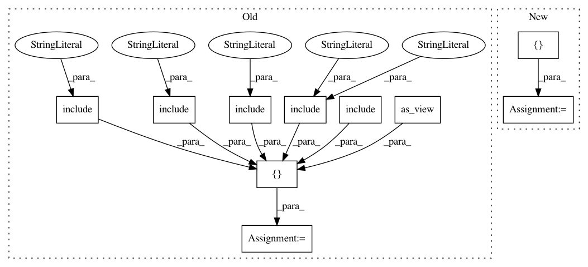

6d097361b1d3e9c4ab03a77d590d6f6cd7d070c2,app/config/urls.py,,,#,19
Before Change
return TemplateResponse(request, template_name, context, status=500)
urlpatterns = [
// main page
url(r"^$", comicmain, name="home"),
url(
r"^robots\.txt/$",
TemplateView.as_view(
template_name="robots.txt", content_type="text/plain"
),
),
url(settings.ADMIN_URL, admin.site.urls),
url(r"^site/", include("grandchallenge.core.urls"), name="site"),
// Do not change the namespace without updating the view names in
// evaluation.serializers
url(r"^api/", include("grandchallenge.api.urls", namespace="api")),
// Used for logging in and managing grandchallenge.profiles. This is done on the framework
// level because it is too hard to get this all under each project
url(r"^accounts/", include("grandchallenge.profiles.urls")),
url(r"^socialauth/", include("social_django.urls", namespace="social")),
url(
r"^challenges/",
include("grandchallenge.challenges.urls", namespace="challenges")
),
// ========== catch all ====================
// when all other urls have been checked, try to load page from main project
// keep this url at the bottom of this list, because urls are checked in
// order
url(r"^(?P<page_title>[\w-]+)/$", comicmain, name="mainproject-home"),
url(r"^media/(?P<challenge_short_name>[\w-]+)/(?P<path>.*)$", serve),
]
if settings.DEBUG and settings.ENABLE_DEBUG_TOOLBAR:
import debug_toolbar
After Change
return TemplateResponse(request, template_name, context, status=500)
urlpatterns = [
// main page
url(r"^$", comicmain, name="home"),
url(
r"^robots\.txt/$",
TemplateView.as_view(
template_name="robots.txt", content_type="text/plain"
),
),
url(settings.ADMIN_URL, admin.site.urls),
url(r"^site/", include("grandchallenge.core.urls"), name="site"),
// Do not change the namespace without updating the view names in
// evaluation.serializers
url(r"^api/", include("grandchallenge.api.urls", namespace="api")),
// Used for logging in and managing grandchallenge.profiles. This is done on the framework
// level because it is too hard to get this all under each project
url(r"^accounts/", include("grandchallenge.profiles.urls")),
url(r"^socialauth/", include("social_django.urls", namespace="social")),
url(
r"^challenges/",
include("grandchallenge.challenges.urls", namespace="challenges"),
),
re_path(
r"^(?i)all_challenges/$",
RedirectView.as_view(pattern_name="challenges:list", permanent=False),
),
// ========== catch all ====================
// when all other urls have been checked, try to load page from main project
// keep this url at the bottom of this list, because urls are checked in
// order
url(r"^(?P<page_title>[\w-]+)/$", comicmain, name="mainproject-home"),
url(r"^media/(?P<challenge_short_name>[\w-]+)/(?P<path>.*)$", serve),
]
if settings.DEBUG and settings.ENABLE_DEBUG_TOOLBAR:
import debug_toolbar
In pattern: SUPERPATTERN
Frequency: 3
Non-data size: 10
Instances
Project Name: comic/grand-challenge.org
Commit Name: 6d097361b1d3e9c4ab03a77d590d6f6cd7d070c2
Time: 2018-06-13
Author: jamesmeakin@gmail.com
File Name: app/config/urls.py
Class Name:
Method Name:
Project Name: comic/grand-challenge.org
Commit Name: f608dbd0e58b5ec84e1f5e769c2e30bbf34d9b4b
Time: 2018-05-30
Author: jamesmeakin@gmail.com
File Name: app/config/urls.py
Class Name:
Method Name:
Project Name: chakki-works/doccano
Commit Name: 44574220907c2ec2de16cba2131738fd1da4d0fe
Time: 2020-11-30
Author: light.tree.1.13@gmail.com
File Name: app/app/urls.py
Class Name:
Method Name: